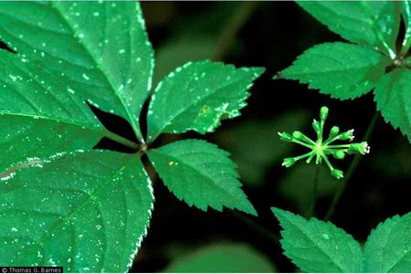

Ginseng is one of the most sought-after wild plants in Vermont and is by far the most valuable. Its name is an anglicized form of the Chinese words meaning "like a man". This refers to the shape of the root, the active part of the plant. Panax ginseng, native to China, has been used there for thousands of years. The root is used medicinally as a cure-all and prized as the best aphrodisiac. The aphrodisiac effect was confirmed by Brigham, who said the effect manifested in erotic dreams for him after taking a large amount of ginseng one time. A similar species called American ginseng (P. quinquefolius) once grew abundantly in the range of the Appalachian mountains, from Georgia North to Canada. (From now on any use of “ginseng” will refer P. quinquefolius.) Interestingly, the American Indians called their ginseng "the little man" similar to the Chinese. They knew about ginseng's medicinal properties and it was used for many of the same afflictions as in China (USDA NRCS 2006).
Ginseng is an especially long-lived plant with a slow life cycle. It grows in heavy shade, on East- and North-facing slopes with well-drained soil under deciduous trees (Brigham, Hankins). It can pollinate both sexually and asexually and propagates by seed. A mature plant produces berries that, when mature, are bright red. The plant has distinct stages of life, usually characterized by the number of compound leaves (prongs). The first year seedling plant grows with only one prong. In general, ginseng grows two prongs the second year, and three prongs after at least three years. Although it may flower in the third year, plants are not considered mature until they are five years old (Brigham, “Good Stewardship Harvesting of Wild American Ginseng”). Each year the frost kills off the leafy top, but the root survives underground. The “neck” of the root is scarred each year and can thus be examined to determine age. For example: a plant with four scars is at least five years old. Ginseng is versatile and can live dormant underground if it has to. The plant will not grow a new scar that year, so it is better to say the plant is at least as old as the number of scars. It is not known how long ginseng can live. The most ancient plants have already been harvested. Brigham reported finding plants with more than 20 scars, so many that the neck of the root was longer than an arm-length. He estimated the oldest plants he found had probably lived for nearly 100 years.
The medical action of ginseng is attributed to its unique class of compounds called ginsenosides. It has been used for type II diabetes as well as to improve mental performance (ginseng is a central nervous system stimulant). It is also used for many other illnesses, but there is “unclear scientific evidence” for these uses (“Ginseng”). Research is ongoing.
Europeans became aware of ginseng in 1716, when Jesuit priest Joseph Lafitau of Quebec heard about P. ginseng from another Jesuit in China who mentioned that the valuable Chinese root grew in habitats similar to Quebec and New England (Gabel 12). Over-harvesting in China made the root extremely rare and thus very profitable. An international trade was established between Quebec and China. It then spread south into the British territories. “Vermont” was one of the first regions involved in the ginseng trade (it was not a state yet) and it was important for the state's livelihood (Gabel 12, Thompson 221).
At its peak, wild ginseng could fetch up to $600 per dry pound but now brings in around $300-400 per pound (Brigham, Hankins). Price varies drastically with quality. The best roots come from the oldest plants, valued because they are more gnarled and “break with a somewhat soft and waxy texture” (Stockberger). They must also be properly dried. The Chinese market is very picky about the ginseng they want. The more branches the root has, the more gnarled and twisted it is, and the darker its color, the more desirable it is. The reasons for this preference are based in the Chinese system of medicine which says the roots gain potency as they age. It also more resembles the roots of P. ginseng (Brigham, Hankins). In “the early 1750s, when the market crashed due to an over-abundance of small, poor-quality roots being shipped to China” the Vermont ginseng market suffered significantly (Gabel).
Cultivators of ginseng must strive to simulate the natural growing conditions that make a product the market wants. Cultivated roots are often shaped more like a carrot than the man that markets want. Growers often over-fertilize when striving for higher yields, and this further hurts the quality of the product. These lower-grade roots, from cultivation under artificial shade, sometimes fetch as little as $10 per pound. China is now growing its own supply of lower-grade ginseng and many growers are now out of business. With agroforestry, farmers can cultivate ginseng with all the characteristics of the wild root. This takes more patience and careful site planning (both to ensure a good crop and protect from thieves) than with artificial shade and the yields are lower. At the moment, however, this is the only economically viable type of cultivation in America (Hankins).
Currently, only one company is cultivating wild-simulated ginseng in Vermont, Vermont Woodland Ginseng. Their product is NOFA-VT certified organic, and sells for $25 an ounce. Brigham grew the crop in his youth as a sort of “ginseng bank account.” As a boy, he transplanted wild seedlings and berries out of the deep woods to places closer to home. Experimenting with different locations, he realized that the plant needs very specific soil and shade to thrive. The best spots are undisturbed. The presence of other herbaceous (often rare) plants can be an indication of a good site (Brigham, Hankins). Brigham also noted that the dirt will taste good, almost sweet. Later on, Brigham worked to establish large patch in a secret location with collected wild berries. In the fifth year, however, he had pest problems which decimated the crop. He ended up netting very little money and gave up the enterprise.
The demand for ginseng has greatly reduced its populations. Before the export trade was established, ginseng was widespread and could often be found in dense, extensive patches. The first diggers could sometimes bring in “daily harvests of 10-60 pounds... per person” (Gabel 12). Thompson, writing in 1852, remarked that ginseng at that time was already scarce (221). Timber logging also reduced the populations of ginseng (Gabel 12-13, Thompson 221). Following the Convention on International Trade in Endangered Species of Wild Flora and Fauna (CITES) in 1975, ginseng exportation became regulated in 19 states, including Vermont. In Vermont, the root can be legally harvested only on private property with a permit between August 20 and October 10. The plants must be five years old with at least three prongs, and the berries must be replanted.
Wild populations are not regularly monitored in Vermont, however (Gabel). It is on the state watch list. Ginseng is listed “S2S3” in Gabel's report, giving it an imperiled/vulnerable status with probably less than 80 populations. Hopefully, agroforestry methods will mitigate market pressures that drive over-harvesting of wild populations. This will only be assured when wild-simulated ginseng is properly cultivated and brings in prices comparable wild root.
In the 18th and 19th century, a whole culture developed around digging what was sometimes called “old sang.” Ginseng was alluring because of its remarkable value; any old country bumpkin could get rich quick if they found a big patch. Ginseng was never taken in as medicine extensively in Vermont, but people recognized it had special powers. Ginseng diggers are rumored to live longer than others, and one story we gleaned from Brigham illustrates that:
This Vermonter, whom Brigham knew, grew up in a professional, educated family. The digger was bright but not interested in studying as his brothers and dedicated himself instead to sports and wandering the woods; sometimes he would dig ginseng. After high school he was drafted to play for the Red Sox the year the ball club formed. After playing baseball for a while, he decided to return to Vermont, the land he loved, and dig ginseng. Brigham knew him as a lively and healthy being and he always seemed young for his age. His whole life he lived with a great big hernia in his stomach. The doctors recommended he remove it when he was older, but he said he had had it with him his whole life and he had got along fine so far. He eventually died, and it was not until then that people learned he had been lying about his age his whole life and was actually more than a decade older than anyone thought. According to Brigham, being around ginseng, deep in the oldest, most fertile woods, gives one energy and keeps one healthy throughout their life.
Ginseng is a big part of Vermont's history. It was once a very cultural plant as well, which is why its decline is so sad. Hopefully we will preserve what wild population is left for future ginseng hunters, looking for a little piece of their own “gold” in the woods.
